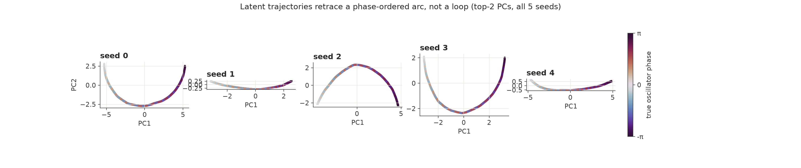
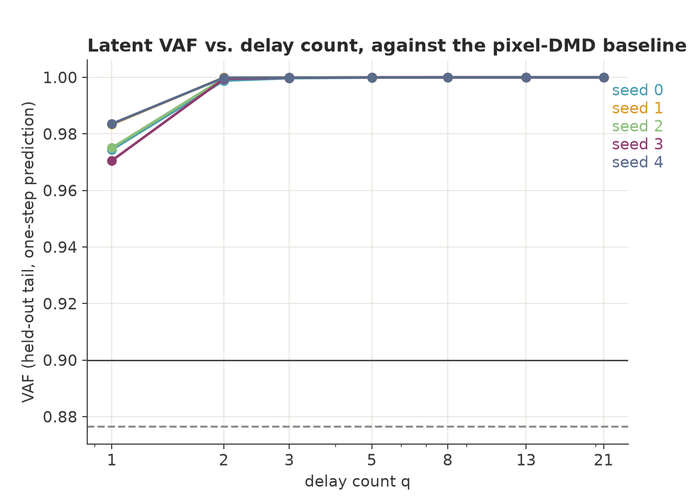
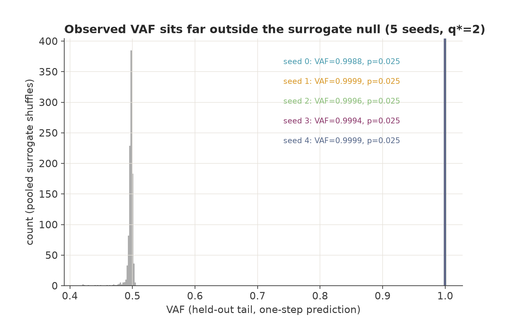
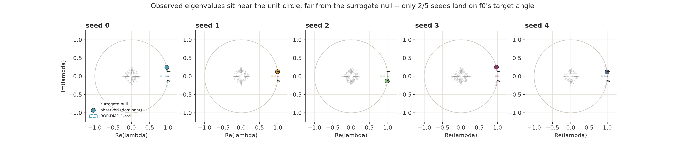
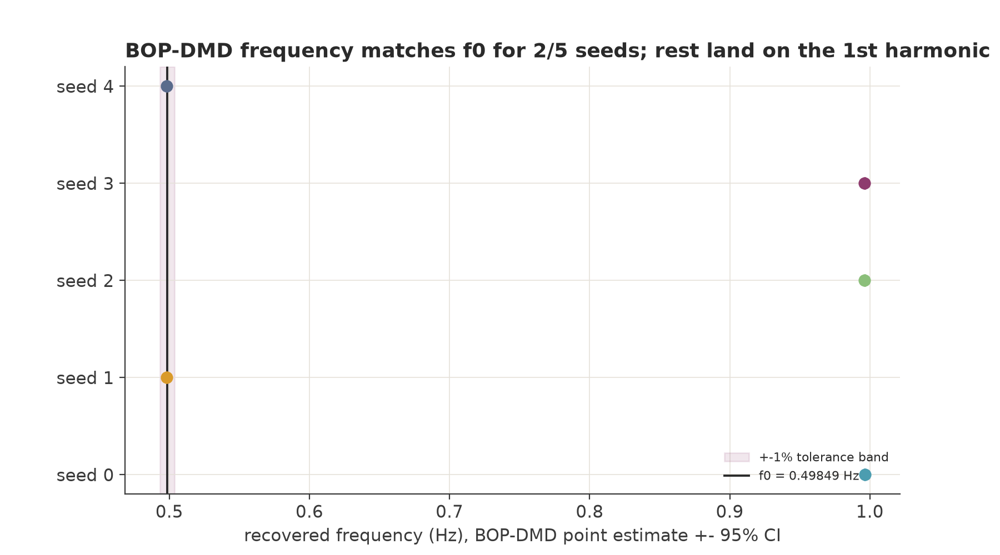
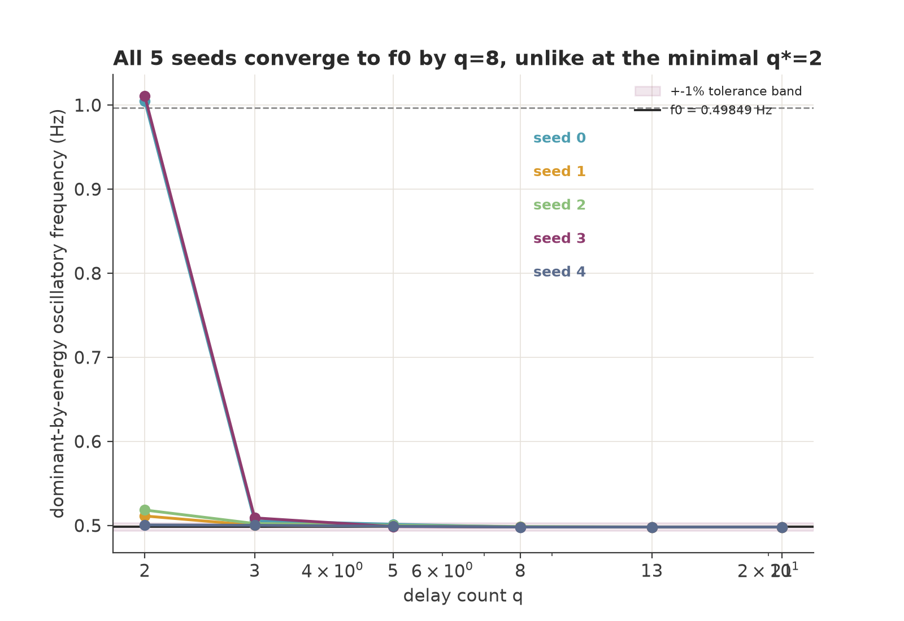
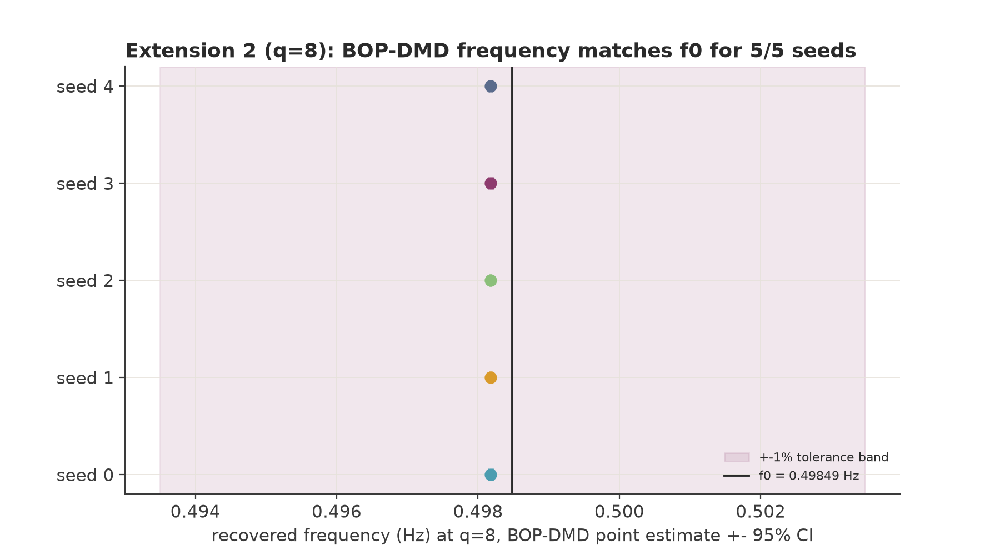
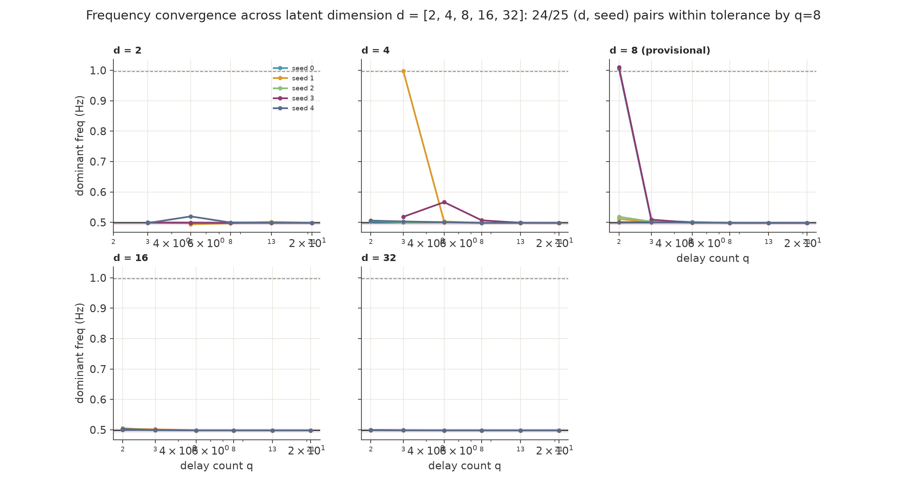
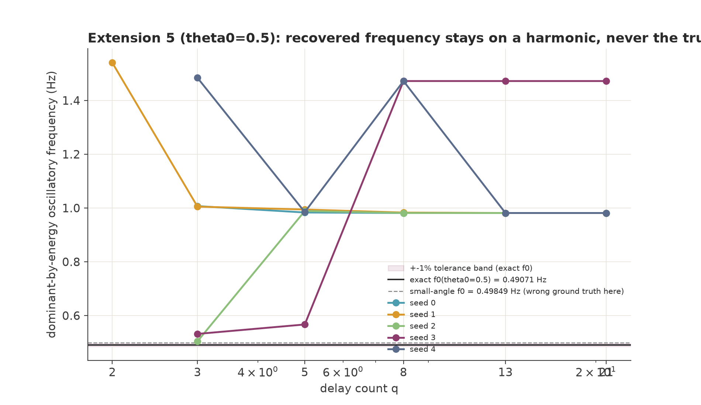
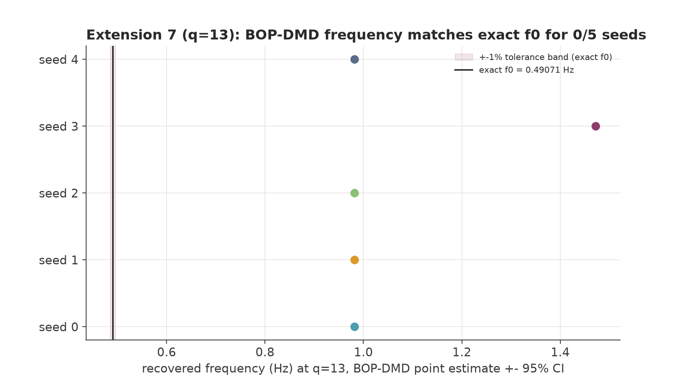

Method
A convolutional autoencoder (five independently trained seeds) compresses each 64×64 frame of a rendered, numerically simulated pendulum down to an 8-dimensional latent code and reconstructs the frame from it, trained only on a pixel-wise reconstruction loss (MSE). It is never given physical parameters, velocity, or timing information. Dynamic Mode Decomposition (DMD) is then run on the resulting latent trajectories to ask a separate question: in latent coordinates, does the pendulum's motion become linearly predictable, one frame's code mapping to the next by a single fixed matrix? This is the Koopman-operator idea: Koopman theory describes nonlinear dynamics through a linear operator acting on observables (functions of the state). If a finite set of observables is approximately closed under the dynamics, then that set evolves approximately linearly, and the question is whether latent coordinates learned only for reconstruction form such a set. The DMD implementation was first validated against a published fluid-dynamics benchmark (cylinder-wake flow, Re=100) to ≥6 significant figures before being applied to the pendulum.
A single frame does not determine the direction of motion (each angle is passed once moving left and once moving right), so DMD is run not on individual latent codes but on short stacks of q consecutive codes (a delay embedding), so each embedded point also carries angular-velocity information. How large q needs to be before the trajectory becomes linearly predictable, and separately, before DMD recovers the correct frequency, are the project's two central questions.

Results
All 5 seeds first cleared the one-step predictability threshold (variance accounted for, VAF ≥ 0.90) at q* = 2, the smallest delay at which one-step prediction is possible, since each code depends only on the angle while the state (angle, angular velocity) is 2-D, and saturated to VAF > 0.999 by q = 3. At q = 1 the VAF also exceeds 0.90 (0.971–0.984, left edge of the figure), but it is no higher than a persistence baseline that predicts each code to equal the previous one (difference ≤ 0.0003), so the q = 1 value reflects frame-to-frame similarity, not dynamics.

High one-step VAF alone is not evidence of dynamical structure: a slow, smooth video can look predictable purely because consecutive frames resemble each other. Each latent trajectory was tested against 200 randomly shuffled versions of itself. Every seed's observed VAF exceeded all 200 surrogates (p = 1/201, the minimum attainable with 200 permutations; Holm-Bonferroni corrected p = 0.0249 for all five), indicating that prediction accuracy depends on the original temporal ordering and not merely on frame-wise statistics.


By the project's pre-specified test (exact DMD; Tu et al., 2014), only 1 of 5 seeds recovered the pendulum's oscillation frequency (f₀ = √(g/L)/2π = 0.498488 Hz, the small-angle value; the exact frequency at 0.1 rad is 0.06% lower) within the pre-specified 1% tolerance at q* = 2; the other four passed the shuffle test, but their dominant DMD mode (largest amplitude) was either at the harmonic 2f₀ (seeds 0 and 3), or near f₀ but outside tolerance (seeds 1 and 2, 2.57% and 3.99% off). A second estimator (BOP-DMD, plotted below) agrees on seeds 0 and 3 (harmonic) and seeds 1 and 4 (fundamental), places seed 2 at the harmonic, and estimates the fundamental more accurately: seed 1 lands at 0.06% off f₀ under BOP-DMD versus 2.57% off (outside the 1% tolerance) under exact DMD, a known bias of exact DMD that optimized DMD reduces (Askham & Kutz, 2018; BOP-DMD: Sashidhar & Kutz, 2022). That accuracy difference, not a contradiction, is why the figure below reads 2 of 5.

Extension: a little more delay fixes it
Increasing the DMD delay q (same trained weights) resolved the mismatch. By q = 5, all 5 seeds' dominant-mode frequency fell inside the tolerance band; by q = 8, all 5 converged to within 0.06% of f₀ and stayed there through q = 21.

With the complete test (shuffle test, Holm-Bonferroni correction, and BOP-DMD confidence intervals) re-run at q = 8, all 5 seeds land in the pre-specified success outcome (significant VAF and dominant frequency within 1% of f₀), vs. 1 of 5 at q = 2.

Extension: does network size matter?
The same pattern held across a 16× range of latent dimension (d = 2 to d = 32, five independently trained seeds at each size). The minimum delay for one-step predictability, q*, was 2 for all 25 (d, seed) combinations, consistent with q* being set by the state dimension rather than by d. The delay needed to resolve the correct frequency did vary: 24 of 25 combinations converged by q = 8, with one exception (d = 4, seed 3), which converged at q = 13 and passed the same tests there.

Extension: pushing into the nonlinear regime
Every result above used a small, 0.1 rad (≈5.7°) amplitude, where a pendulum is well approximated by the small-angle (harmonic oscillator) model. Repeating everything at a larger amplitude, 0.5 rad (≈28.6°), where the small-angle frequency is off by 1.6%, the pattern did not hold: no seed's dominant frequency came within 1% of the exact frequency at this amplitude (f₀ = 0.49071 Hz) at any q ≤ 21. In every seed the dominant mode settled on a harmonic (2f₀ in four seeds, 3f₀ in one) and stayed there through q = 21.

A supplementary check ruled out the pendulum's motion itself as the cause: DMD run directly on the bob's exact (x, y) pixel coordinates (no autoencoder involved) recovers the exact frequency to a relative error of 6 × 10⁻¹¹ by q = 21. The harmonic dominance therefore appears only after the motion is rendered and encoded (DMD was not run on the rendered frames alone at this amplitude, so these two steps are not separated). Applying the full shuffle test to these runs confirmed that their predictability was not attributable to noise. These runs also reached p = 1/201, indicating that the frequency failure is not due to a lack of temporal structure.

Summary
An autoencoder trained only on per-frame reconstruction produces latent codes from which DMD, with delay embedding, recovers the pendulum's oscillation frequency once given q = 5–8 (13 in one case) rather than a single frame. That story holds across the network's latent dimension (d = 2–32), and a separate check (feeding the encoder two consecutive frames instead of stacking delay) confirmed the same q ≥ 2 requirement and converged to the correct frequency at smaller q (3–5 rather than 5–8; this difference was not tested for significance). It does not hold at the larger tested amplitude (0.5 rad): the one finding in the project that increasing q (to 21) did not change, and that passed the same significance test.